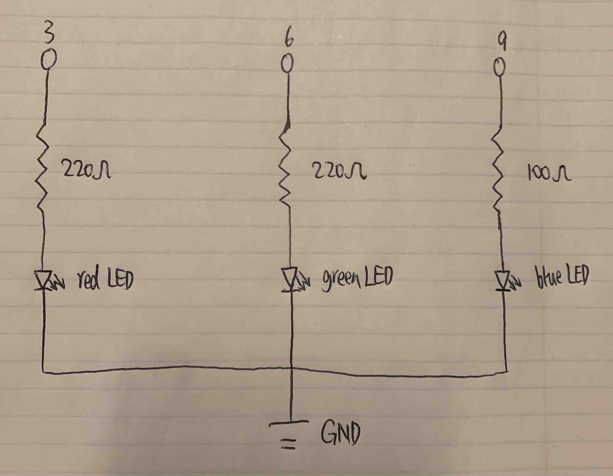

Cheng's Assignment 1 - Blink!

This is my schematic for the Blink assignment.

This is my circuit for the Blink assignment.
// Cheng Guo
// HCDE 439 - HW 1
// initialize pins and delay time
int redLED = 3; // set red LED on pin 3
int greenLED = 6; // set green LED on pin 6
int blueLED = 9; // set blue LED on pin 9
int shortDelay = 10; // wait for a centisecond
int maxValue = 25; // the max value to write for any LED
// the setup function runs once when you press reset or power the board
void setup() {
// initialize digital pins as outputs.
pinMode(redLED, OUTPUT); // initialize red LED on pin 3
pinMode(greenLED, OUTPUT); // initialize green LED on pin 6
pinMode(blueLED, OUTPUT); // initialize blue LED on pin 9
}
// the loop function runs over and over again forever
void loop() {
// make the red LED blink
for (int i = 0; i < maxValue; i++) { // turn the red LED on by increasing the value to it
analogWrite(redLED, i); // write value to the red LED
delay(shortDelay); // wait for wait for a centisecond
}
for (int j = maxValue; j >= 0; j--) { // turn the red LED off by decreasing the value to it
analogWrite(redLED, j); // write value to the red LED
delay(shortDelay); // wait for wait for a centisecond
}
delay(shortDelay * maxValue); // wait for a quarter second
// make the green LED blink
for (int i = 0; i < maxValue; i++) { // turn the green LED on by increasing the value to it
analogWrite(greenLED, i); // write value to the green LED
delay(shortDelay); // wait for wait for a centisecond
}
for (int j = maxValue; j >= 0; j--) { // turn the green LED off by decreasing the value to it
analogWrite(greenLED, j); // write value to the green LED
delay(shortDelay); // wait for wait for a centisecond
}
delay(shortDelay * maxValue); // wait for a quarter second
// make the blue LED blink
for (int i = 0; i < maxValue; i++) { // turn the blue LED on by increasing the value to it
analogWrite(blueLED, i); // write value to the blue LED
delay(shortDelay); // wait for wait for a centisecond
}
for (int j = maxValue; j >= 0; j--) { // turn the blue LED off by decreasing the value to it
analogWrite(blueLED, j); // write value to the blue LED
delay(shortDelay); // wait for wait for a centisecond
}
delay(shortDelay * maxValue); // wait for a quarter second
// make three LEDs blink together
for (int i = 0; i < maxValue; i++) { // turn the LEDs on by increasing the value to them
analogWrite(redLED, i); // write value to the red LED
analogWrite(greenLED, i); // write value to the green LED
analogWrite(blueLED, i); // write value to the blue LED
delay(shortDelay); // wait for wait for a centisecond
}
for (int j = maxValue; j >= 0; j--) { // turn the LEDs off by decreasing the value to them
analogWrite(redLED, j); // write value to the red LED
analogWrite(greenLED, j); // write value to the green LED
analogWrite(blueLED, j); // write value to the blue LED
delay(shortDelay); // wait for wait for a centisecond
}
delay(shortDelay * maxValue); // wait for a quarter second
}
This is my code for the Blink assignment. Each LED each blinks for a quarter second in the sequence of red, green, and blue, then all of them blink for a quarter second. There are a quarter second delay between all blinks. The entire process loops.

This is my circuit's operation for the Blink assignment.
My Calculation: Why did I pick these values for the resistors?
I choose to use red, green, and blue LEDs and put them in parallel.
For the red and green LEDs, they both have a 1.8V drop. 5V - 1.8V = 3.2V and 3.2V / 20mA = 160Ω. To not have the current flow through the those two over 20mA, the resistence should be greater than 160Ω. But I want the resistence to be as small as possible. So I used 220Ω resistors for the red and green LEDs.
For the blue LED, it has a 3.3V drop. 5V - 3.3V = 1.7V and 1.7V / 20mA = 85Ω. To not have the current flow through the those two over 20mA, the resistence should be greater than 85Ω. But I want the resistence to be as small as possible. So I used 100Ω resistors for the blue LED.